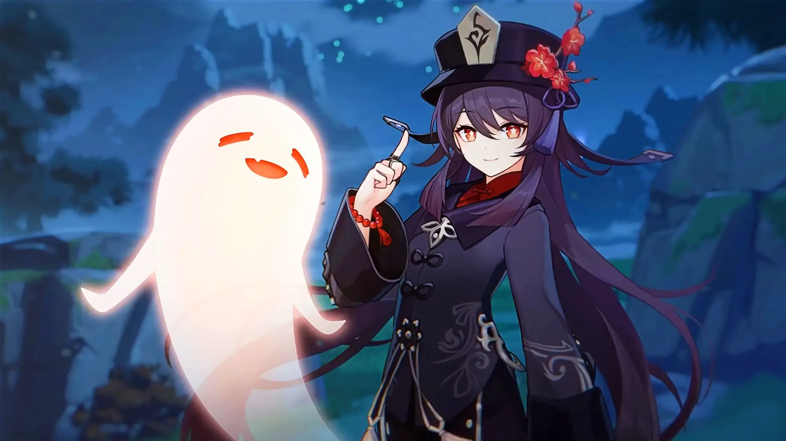
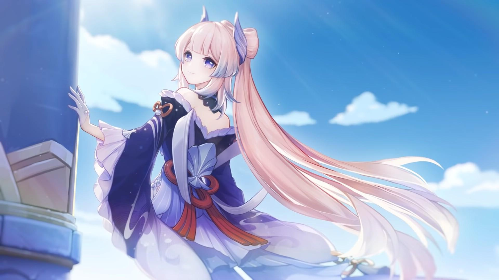

C'est un jeu vidéo de type action-RPG développé par miHoYo2, en 2020.
L'histoire se déroule dans un monde fantastique, nommé Teyvat. En tant que joueur, nous nous retrouvons face à deux personnages, frère et soeur, qui se retrouvent alors séparés par une déesse inconnue. Nous commençons notre aventure en tant que Voyageur ou Voyageuse dont l'origine est inconnue, à la recherche de l'autre. Au cours de l'aventure, nous rencontrons différents personnages que l'on pourra jouer, chacun ayant une personnalité unique et des capacités élémentaires différentes selon le personnage. Il existe 7 capacités élémentaires: Pyro(feu), Cryo(glace), Hydro(eau), Anémo(vent), Geo(terre), Electro(électricité) et Dendro(nature). Ces éléments peuvent être contrôlés par un œil divin.
Nous avons aussi differentes régions représentées par un dieu, un archon, d'un élément.
Elles sont inspirées par des pays réels. Pour le moment, il ya: Mondstadt, une ville symbole de liberté avec l'archon Anémo, qui a été inspirée de l'Angleterre, Liyue, une ville symbole des contrats avec l'Archon Géo, qui a été inspiré de la Chine, la culture chinoise, Inazuma, une ville symbole d'éternité avec l'archon Electro, qui a été inspiré du Japon et enfin Sumeru, une ville symbole du savoir et de la sagesse avec l'archon Dendro, qui a été inspiré de l'Afrique, des pays chaux(avec des forêts et des déserts). D'autres régions avec leur dieu respectif ne sont pas encore présentes dans le jeu, il ya: Fontaine, ville symbole de justice avec l'Archon Hydro, qui est inspiré de la France, Natlan, ville symbole de la guerre avec l'archon pyro et enfin Snezhnaya avec l'archon Cryo, qui va sans doute être inspirer de la Russie.
Au cours des quêtes, l'histoire de ce nouveau monde évolue à travers les personnages rencontrés.
J'adore beaucoup de personnages mais je vais en présenter 2 de mes préférés:
Hu tao
- vient de Liyue
- oeil divin Pyro
- arme: lance
- 77e directrice du Funérarium Wangsheng
Possède une personnalité très enjouée, comme un enfant mais qui sait rester sérieuse quand il le faut.
Je m'identifie énormément dans ce personnage, c'est l'une des raisons pour lesquelles je l'adore.
Sangonomiya Kokomi
- vient d'Inazuma
- oeil divin Hydro
- arme: catalyseur
- la prêtresse divine et l'autorité suprême en poste sur l'île de Watatsumi.
Possède une personnalité sérieuse, mais est quelqu'un de très gentille et amicale, elle sait faire la part des choses et elle est une très bonne leadeuse.
J'adore son design avec ces couleurs qui s'harmonisent.